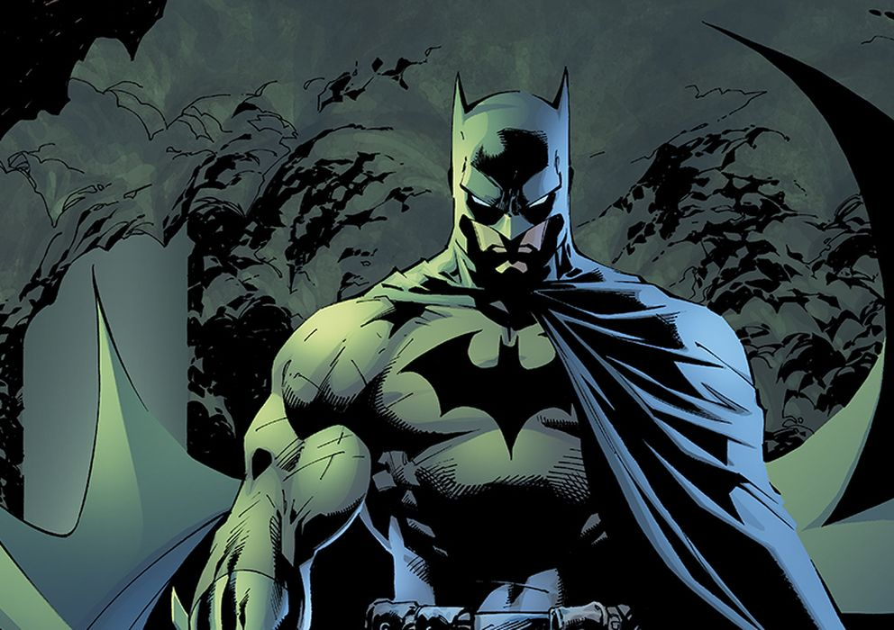

Batman (conocido inicialmente como The Bat-Man y en español
como el Hombre Murciélago) Es un superhéroe ficticio de cómic
creado por Bob Kane y Bill Finger
y propiedad de DC Comics.
Apareció por primera vez en la historia titulada
«El caso del sindicato químico»
de la revista Detective Comics N.º 27,
lanzada por la editorial National Publications el 30 de marzo de 1939.
